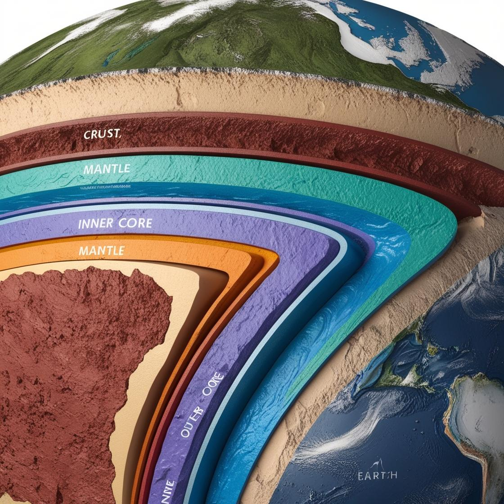

Act 1.1 - The Secret of the Earth's Inner Layers
When I opened my eyes again, the pitch-black scene inside the spacecraft frightened me. Just when I was worried, the magnetic voice appeared again: "Sir, we are not on the surface now, but underground!"
"Aren't you a robot that popularizes astronomy? Since we want to spread astronomical knowledge, shouldn't we go to other planets to have a look?" I couldn't help but wonder.
"Sir, to understand a planet, we need to pay attention not only to its external features, but also to investigate its internal structure, so I'll take you to see it!" I suddenly realized and began to recall the knowledge about the Earth's inner layers.
After a while, as we continued to go deeper underground, a burning sensation came with it. PETE also turned on the high-tech display screen and projected the structure of the Earth's inner layers
Just as I was looking at the picture, PETE began to introduce: The Earth's inner layers are mainly composed of three parts: crust, mantle, and core.
Crust
The crust is mainly composed of solid rock and is located outside the Moho interface (mentioned later). The thickness of the crust varies. The oceanic crust is thin, the continental crust is thick, and the mountainous crust is even thicker. It is mainly due to plate factors, and of course, there are external forces involved (water, wind, etc.)
Mantle
The range of the mantle is from the Moho interface to the Gutenberg interface (also mentioned later). The mantle is also divided into the upper mantle and the lower mantle. There is an asthenosphere above the upper mantle and below the lithosphere (which will be explained in the next section). Due to the high temperature and pressure, most rocks begin to melt, so many scientists believe that this is the main source of magma.
Core
The core is the core of the earth, located in the innermost part of the earth. It is mainly composed of iron and nickel elements, and the temperature is very high, ranging from 4000 to 6800℃. According to the changes in seismic waves, it is divided into two parts: the inner core and the outer core. Because the transverse waves of seismic waves cannot pass through the outer core, it is generally speculated that the outer core is composed of molten or nearly liquid substances composed of iron, nickel, silicon, and other substances. Since shear waves exist in the inner core, the density of the inner core is extremely high (pressure is also high), so the inner core is solid.
I looked at the picture of the inner layer thoughtfully, "What is the difference between shear waves and longitudinal waves? Is there any relationship between seismic waves and the two major interfaces?
"Sir, your guess is correct. Due to the change in the velocity of seismic waves, we found two discontinuities - the Moho interface and the Gutenberg interface. But before introducing the two major interfaces, I would like to answer your first question first."
We all know that seismic waves are divided into shear waves (S waves) and longitudinal waves (P waves), and their main difference lies in speed and medium. Longitudinal waves have a fast speed and can propagate in three states; while shear waves, on the contrary, have a slow propagation speed and can only propagate in solids. So, this is why we speculate that the inner core and outer core are solid, molten, or nearly liquid, respectively."
Then let's talk about the two major interfaces. You can observe the seismic wave velocity change with depth. From this we can observe that seismic waves suddenly change at a certain depth. This surface where the wave speed suddenly changes is called a discontinuity surface.
There are two discontinuities inside the earth, which are the two major interfaces we are discussing:
Mono interface
33km below the continental surface, at this interface, the speed of both transverse and longitudinal waves will increase significantly.
Gutenberg interface
At about 2900km underground, the speed of longitudinal waves suddenly decreases, and transverse waves completely disappear.